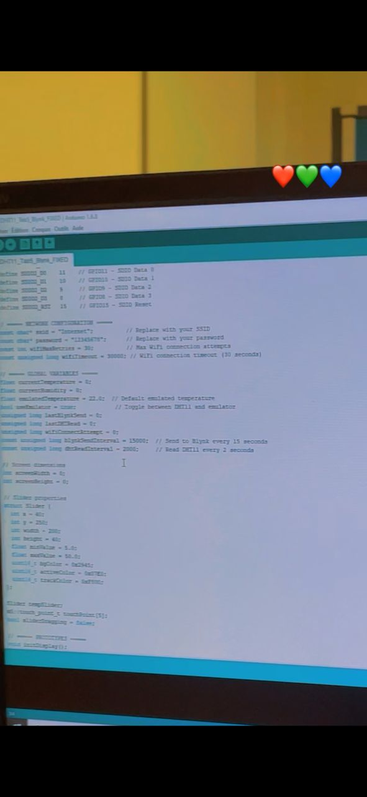
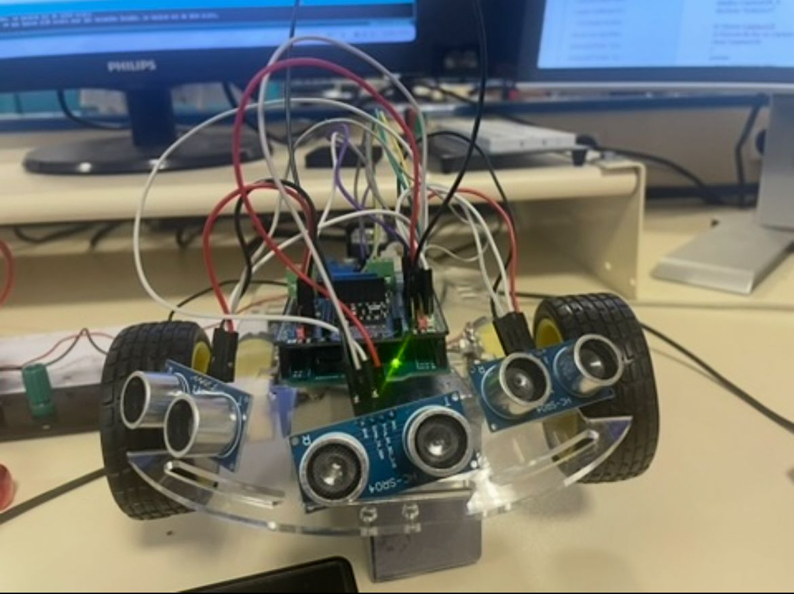
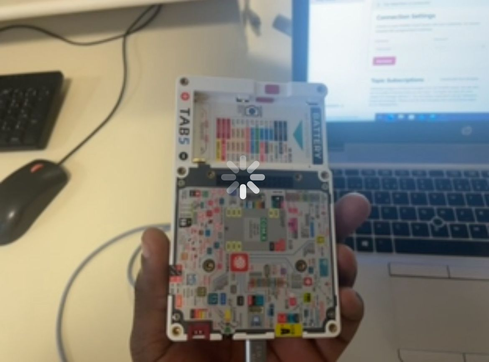
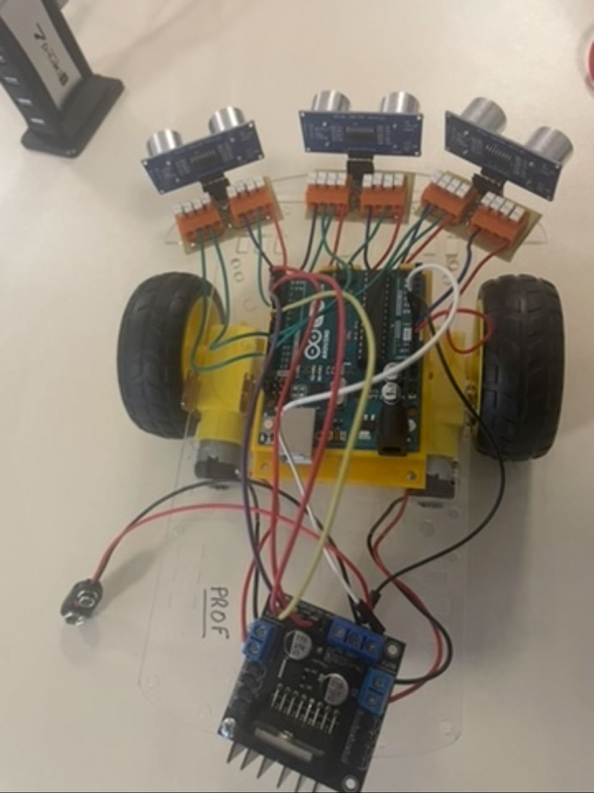
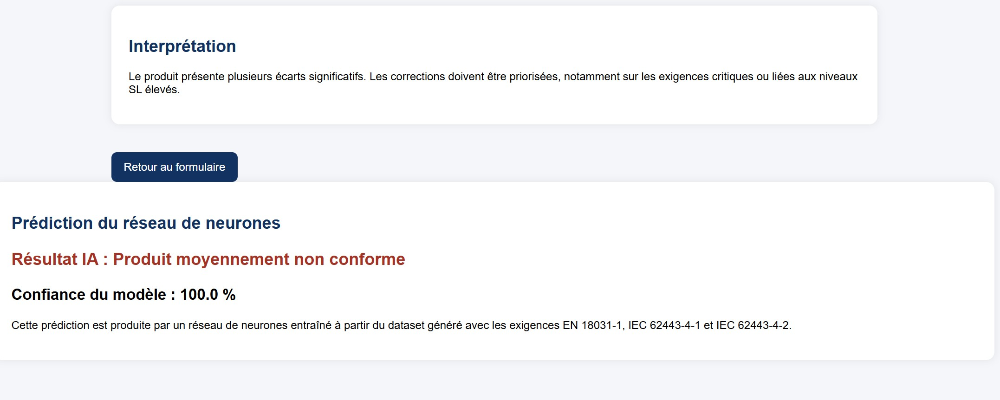
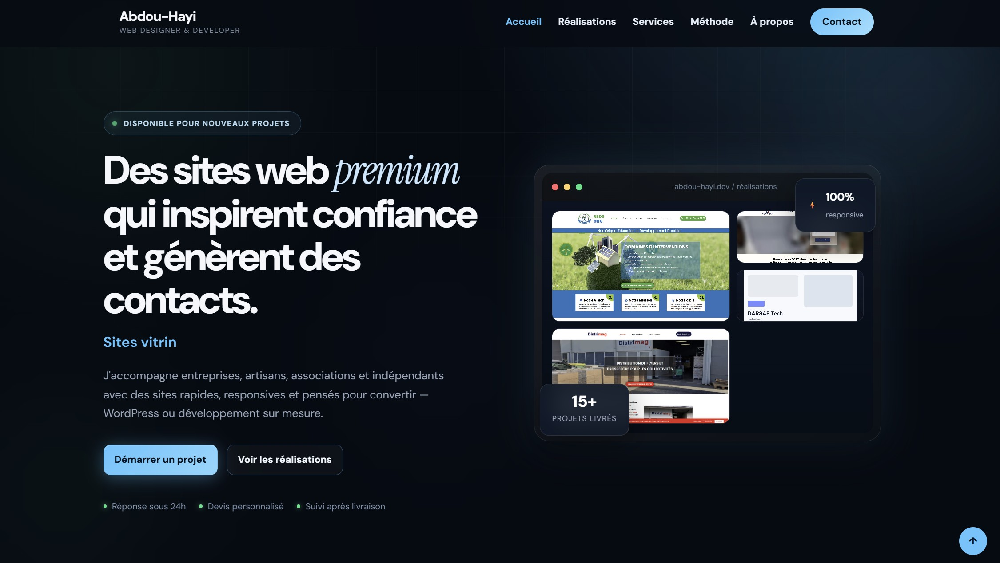
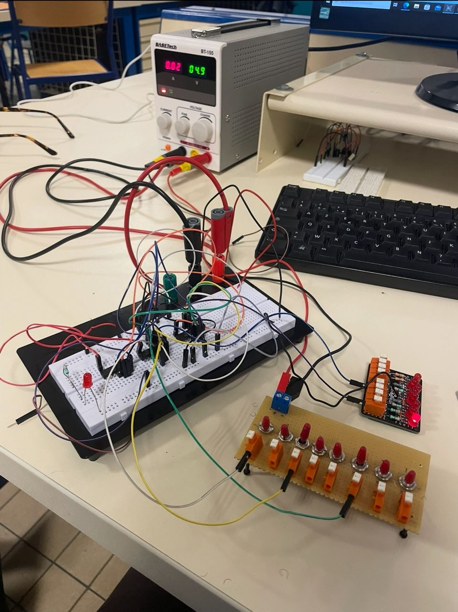

0
Projets techniques
IoT, robotique, électronique, data et web — du prototype à la démo.
Disponible alternance • 36 mois • France
Futur ingénieur • ISTY UVSQ Paris-Saclay
Mon objectif est de concevoir des systèmes capables de mesurer, transmettre, analyser et exploiter efficacement les données afin d’améliorer les environnements industriels et connectés.
Un profil hybride hardware + software + data, forgé sur le terrain et en formation ingénieur.
IoT, robotique, électronique, data et web — du prototype à la démo.
Dev web, IoT, bénévolat tech et formations continues depuis 2018.
CEREMA, BrelSoft, DARSAF/EcomDev et missions terrain concrètes.
C/C++, Python, Arduino, ESP32, MQTT, réseaux, SQL et interfaces web.
Ingénieur SEE, BTS Électronique & Réseaux, Licence pro informatique.
Disponible dès maintenant — mobilité France, profil IoT, données, IA & embarqué.
Capteurs, microcontrôleurs, protocoles et intégration hardware/software.
Collecte, traitement, visualisation et analyse intelligente des données techniques.
Communication MQTT, Wi‑Fi, monitoring et transmission de données.
Interfaces responsives, dashboards, formulaires et applications web.
Je privilégie une approche complète : comprendre le besoin, concevoir la partie électronique, programmer le système, transmettre les données, les analyser et les présenter dans une interface claire.
Cette vision me permet de travailler sur des projets à la frontière entre électronique, programmation, analyse de données et intelligence artificielle appliquée.
ISTY UVSQ Paris-Saclay — systèmes embarqués, IoT et cybersécurité.
Sites, interfaces et support utilisateur en entreprise.
Contrôle d’accès, biométrie et systèmes de sécurité connectés.
Formations numériques, cybersécurité et coordination d’équipes.
Conception de systèmes électroniques capables d’interagir avec leur environnement grâce à des capteurs, microcontrôleurs et protocoles de communication.
Collecte, traitement et exploitation des données issues de capteurs ou systèmes connectés afin d’améliorer la prise de décision.
Intégration progressive de concepts d’IA appliquée, d’automatisation et d’analyse intelligente dans les systèmes modernes.
Création d’interfaces modernes permettant de superviser, visualiser et gérer des systèmes techniques et connectés.

Projet phare • IoTWi‑Fi, Cell-ID et MQTT pour localiser et superviser des objets connectés.
Voir l’étude de cas →
RobotiqueRobot autonome capable de détecter les obstacles et d’adapter sa trajectoire.
Voir le détail →
AutonomePrototype type ROOMBA : navigation, capteurs et comportements autonomes.
Voir le détail →
Conception de prototypes connectés intégrant capteurs, microcontrôleurs, communication réseau et exploitation de données.
Découvrir →
Exploitation de données issues de capteurs ou systèmes connectés pour le monitoring, l’analyse et l’aide à la décision.
Découvrir →
Création de sites web modernes, portfolios, interfaces responsives et tableaux de bord simples.
Découvrir →
Réalisation de montages électroniques, tests, soudure, lecture de schémas et validation de prototypes.
Découvrir →Je recherche une alternance de 36 mois pour concevoir des solutions IoT, embarquées et data-driven en environnement industriel.